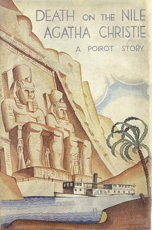

Linnet and Simon depart for their honeymoon. Linnet is apparently one of the luckiest women on earth: she’s young, healthy, fabulously wealthy, enchantingly beautiful, breathtakingly glamorous, newly in love, and blissfully happy. But what seems like the beginning of a charmed life is actually the beginning of the end. First, Jackie enacts a form of psychological revenge that leaves Linnet desperate and shaken: everywhere Linnet and Simon go on their honeymoon, they find Jackie there, too. Tensions heighten as Simon and Linnet embark on a Nile cruise.
Their fellow passengers bring their own share of mysteries and intrigue on board the Karnak with them: there’s the quietMr. Fanthorp, whose claims to be on holiday are unconvincing; the radical Mr. Ferguson, consumed by resentment toward the upper classes; Linnet’s uncle, Andrew Pennington, who claims to have encountered her abroad by mere coincidence (but whose luggage tags suggest another story); Mrs. Otterbourne, a novelist in decline, harboring an unnamed illness; and her daughter Rosalie, who seems to suffer some inner torture. There’s also the pleasant Mrs. Allerton, whose son, Tim, is inexplicably wary of questions about his relationship with his cousin, Joanna; the cunning and mysterious maid, Louise, newly in Linnet’s service; Richetti, the archaeologist desperate to keep the contents of his telegrams private; and the snobbish old Miss Van Schuyler, whose constant demands terrorize her sweet niece,Cornelia, who seems to have something to hide. Luckily, the renowned detective, Hercule Poirot, is also on board. Linnet expresses growing unease, claiming to feel the hatred of all those around her. One day, on a sightseeing trip ashore, a boulder comes hurtling toward Linnet. This is the first attempt on her life (or is it just an accident?). One night, after a particularly stifling day, tensions come to a head. Jackie has too much to drink in the saloon and seems bent on provoking Simon, and telling the world how he has wronged her. She loses her temper, draws her pistol, and shoots. In the flurry of activity that follows, Simon, who has not been mortally wounded, gets care, while a morbidly-repentant Jackie, seemingly bent on suicide, has her pistol goes missing. The next morning,Poirot and his friend, Colonel Race, awaken to a second jolt of grim news: during the night, Linnet was shot dead, the killer’s modus operandi identical in every respect to the murderous fantasy Jackie once confessed to Poirot.